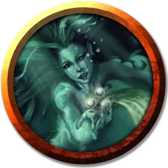

Нереида
Nereid
Средняя Фея, любое хаотичное мировоззрение

Класс Доспеха 13
Хиты 44 (8к8 + 8)
Скорость 30 футов, плавая 60 футов
| мод | спас | ||
|---|---|---|---|
| СИЛ | 10 | +0 | +0 |
| ЛОВ | 17 | +3 | +3 |
| ТЕЛ | 12 | +1 | +1 |
| мод | спас | ||
|---|---|---|---|
| ИНТ | 13 | +1 | +1 |
| МДР | 14 | +2 | +2 |
| ХАР | 16 | +3 | +3 |
Навыки Акробатика +5, Выживание +4, Природа +3, Скрытность +5
Чувства тёмное зрение 60 футов, пассивное Восприятие 12
Языки Общий, Акван, Сильван, Эльфийский
Опасность 2 (450 опыта)
Бонус мастерства +2
Особенности
Амфибия. Нереида может дышать и воздухом, и под водой.
Невидимость в воде. Погружённая в воду нереида может бонусным действием сделать себя невидимой. Она остаётся невидимой, пока она жива, находится в воде или не закончит невидимость бонусным действием.
Вместилище души. Нереида носит мантию из шелковистой ткани цвета морской пены, в которой заключена душа существа. Мантия обладает КД и хитами, равными КД и хитам нереиды, но одеяние не может быть повреждено напрямую, пока нереида носит его. Если мантия будет уничтожена, нереида становится отравленной и умирает спустя 1 час. В случае кражи мантии нереида готова сделать всё, что угодно, лишь бы вернуть её, в том числе даже служить вору.
Формование воды. Нереида может накладывать заклинание власть над водами [control water] не нуждаясь в компонентах. Её базовой характеристикой является Харизма. Дистанция заклинания — 30 футов, и оно может воздействовать на воду объёмом не более 30 кубических футов.
Разговор с животными. Нереида может понимать и вербально общаться со Зверями.
Действия
Ослепляющая кислота. . Рукопашная или дальнобойная атака заклинанием: +5 к попаданию, досягаемость 5 фт или дистанция 30 фт, одна цель. Попадание: 16 (2к12 + 3) урона кислотой и цель становится ослеплённой до начала следующего хода нереиды.
Поцелуй утопленника (перезарядка 5–6). Нереида касается одного видимого ей существа в пределах 5 футов. Цель должна преуспеть в спасброске Телосложения Сл 13, иначе получит 22 (3к12 + 3) урона кислотой. При провале она начинает задыхаться и не может говорить в течение 1 минуты.
В конце каждого своего хода она может повторить спасбросок, заканчивая эффект на себе при успехе.
Водяная плеть. Нереида заставляет 5-футовый куб воды в пределах 60 футов от неё принять форму по её выбору и поразить одну цель, которую она может видеть в пределах 5 футов от этой воды. Цель должна совершить спасбросок Силы Сл 13. При провале она получает 17 (4к6 + 3) дробящего урона, и если цель — существо Большого размера или меньше, она отбрасывается на расстояние до 15 футов по прямой, либо падает ничком (на выбор нереиды). При успехе цель получает половину этого урона и не будет отброшено или сбито с ног.
Описание
Одно из самых привлекательных мест в потаённом святилище Тамоачана — мягко освещённый бассейн с водой, возле которого сидит прекрасное существо, напевающее приятную мелодию. Это нереида — водяная фея, которая может менять окружающую среду по своему желанию. Будь то мужчина, или женщина, нереида обладает потусторонней красотой.